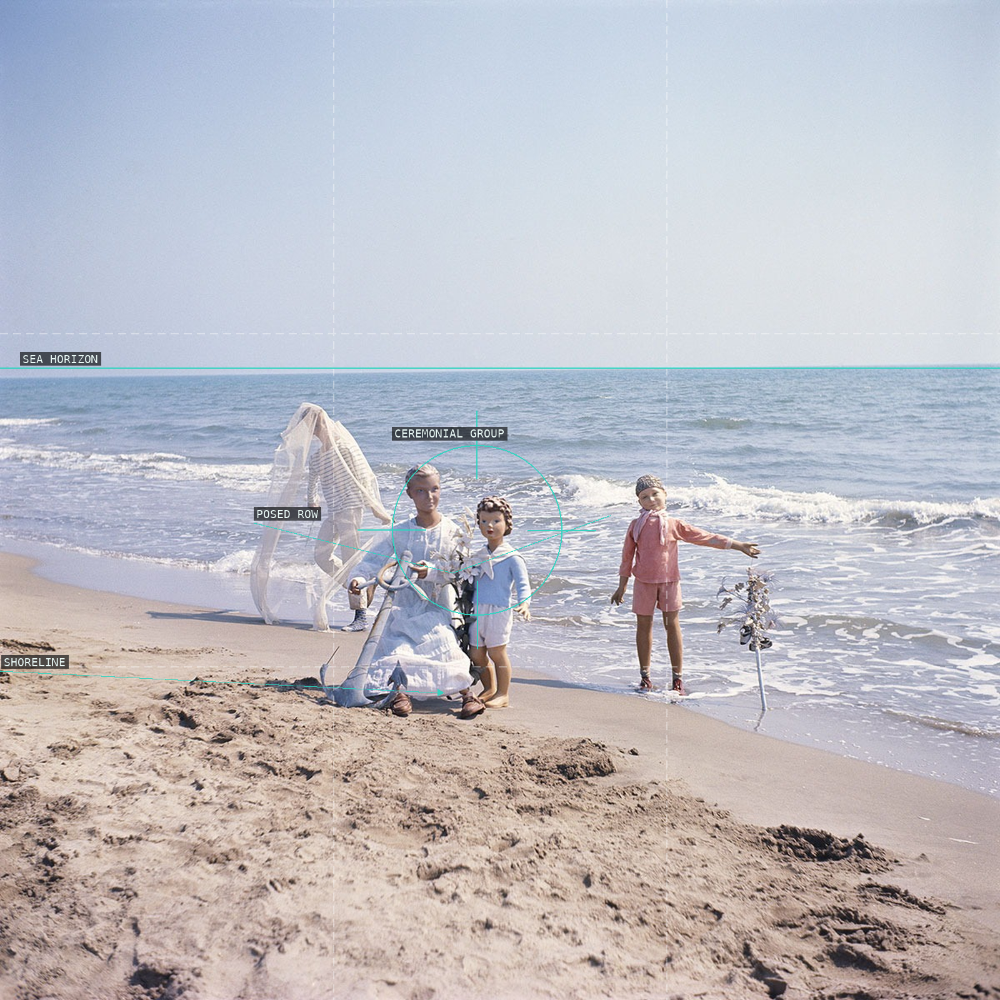
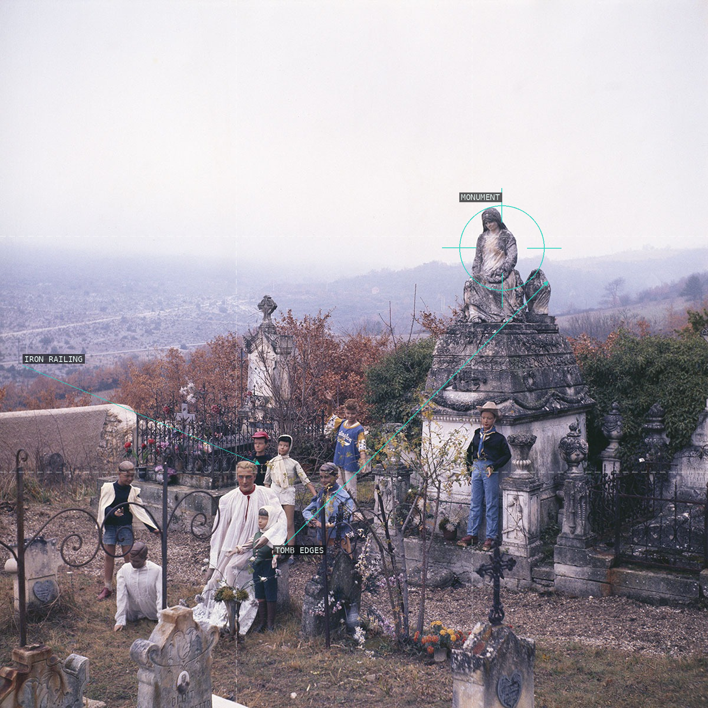
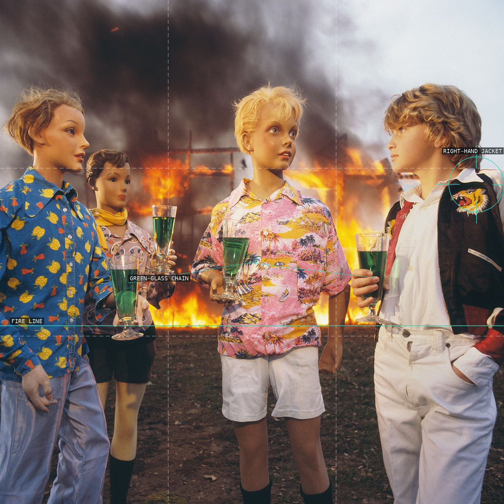
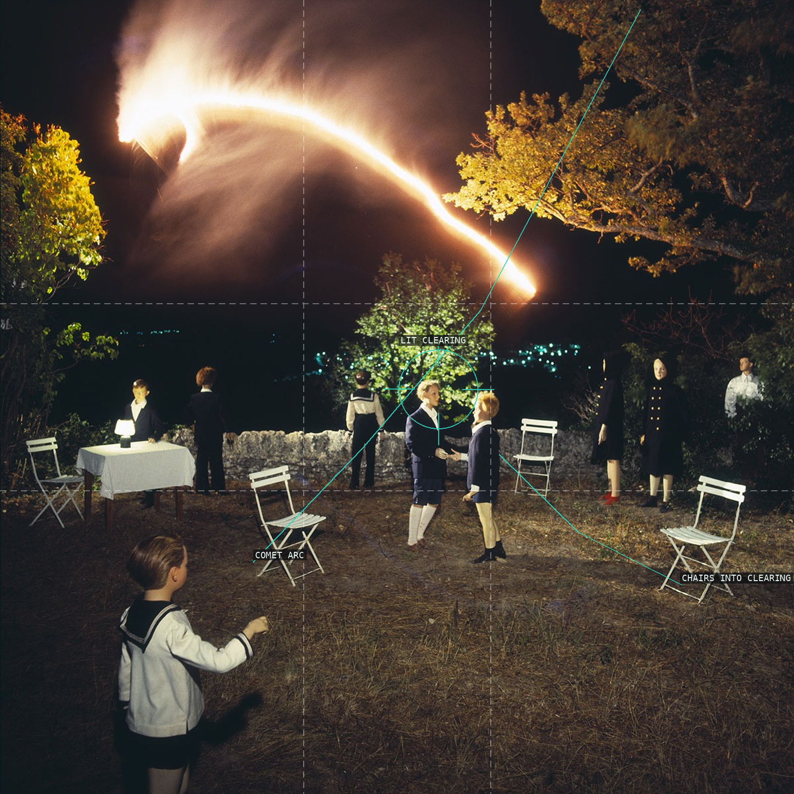
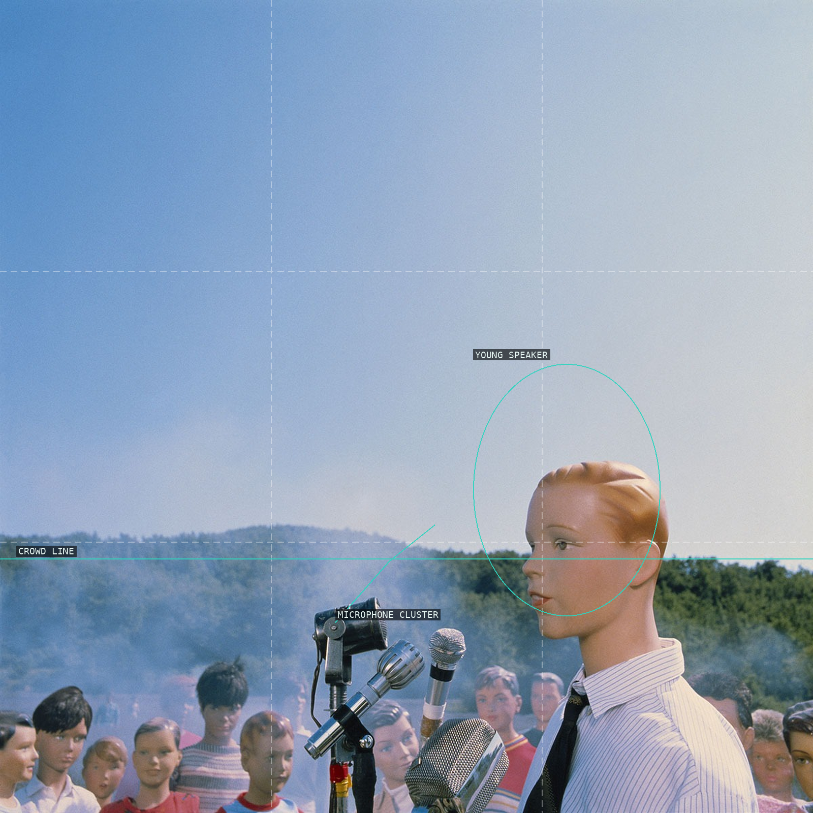
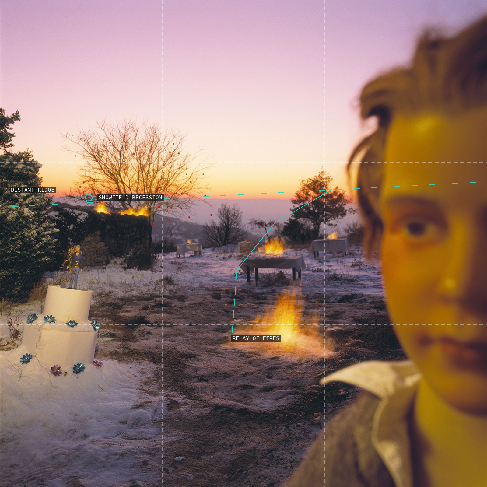

Road and oak canopy stage a procession.

A posed group interrupts sea and sky bands.

Monument, railings, and tomb edges layer the scene.

A suspended figure is staged by near and distant witnesses.

The table moves a feast toward fire.

Glasses and fire make a frontal ritual.

Colored nets organize a posed game.

A bright arc holds a garden clearing.

Speaker, microphones, and blank sky form a stage.

Fires relay across snow toward a distant ridge.